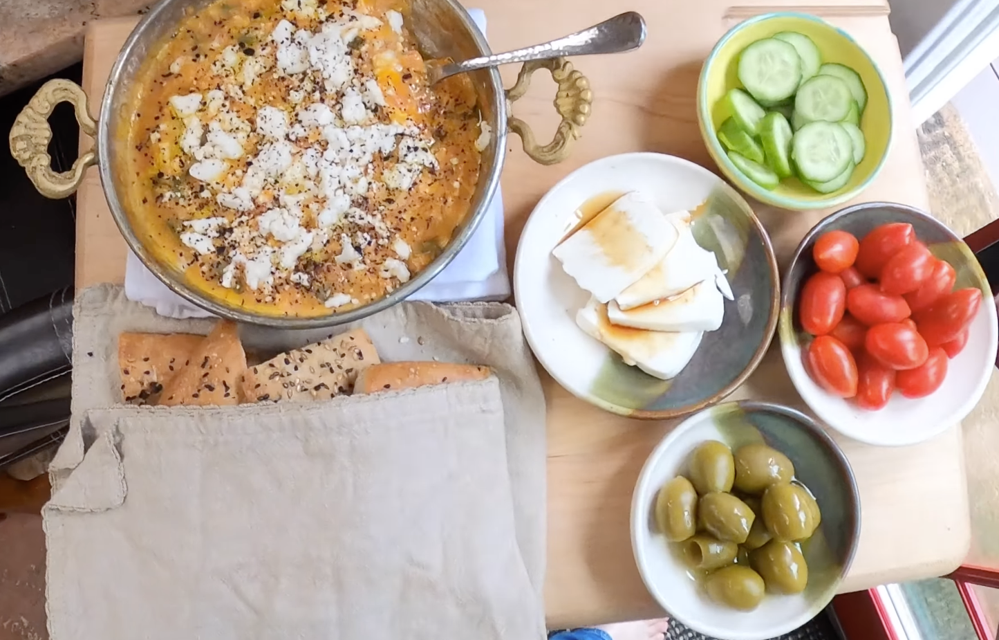

Menemen
- Heat in small frying pan for 8 mins
- 3 tbsp olive oil
- 1 green pepper chopped
- Add and heat until tomatoes darken
- 2 tomatoes grated & skins discard
- pinch chilli flakes
- Season with
- salt
- black pepper
- sugar (optional)
- Turn heat low, add and leave on top for 2 mins
- Gently stir eggs but do not mix in, heating for 5 mins
- Remove heat and leave to finish cooking
- Sprinkle over
- Aleppo pepper / pul biber
- Feta (optional)
Serving
- 2 portions
- Dark honey & soft cheese (mozzarella / burrata)
- Sliced cucumbers
- Green olives
- Turkish bread / pittas
Notes
Pics
